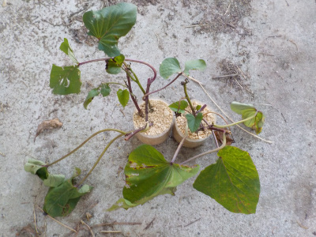
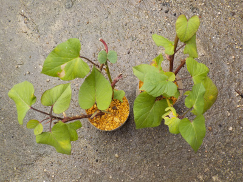
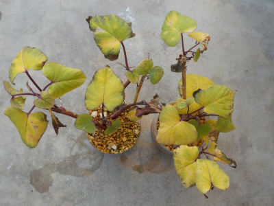

遊びで植物を育てよう
サツマイモのツルは加温しないで冬越しが出来るのか挑戦した。
更新日 : 2022/03/27
2021/09/19
さつまいものツルは冬越しが出来るそうです。

どこかのホームページで、さつまいもはツルの状態で屋内に入れて育てれば冬越しが出来るって記事を読みました。
芋よりもツルの方が耐寒性があるそうです。
我が家の屋内は冬場はとっても寒いので耐えれるかは分かりませんが、挑戦してみようと思います。
2021/11/13
サツマイモを屋内に入れました。

寒くなったのでサツマイモの苗を屋内に移動します。
屋内といっても加温しない場所なので、とっても寒いです。
でも雨風はないので、なんとか耐えてくれないかな。
これが成功したら、もうサツマイモのツルを買う必要がなくなるかもと期待しています。
2022/01/08
サツマイモの葉っぱが黄色くなりました。

寒さで枯れそうですね。
1月でこれだと2月を超えるのは無理かも。
2022/03/27
サツマイモは完全に枯れたようです。

枯れました。
残念ですね。でもいい勉強になりました。
9月にツルを採ってから土が乾いたら水やりやって、天気が良ければ日当たりのいい場所に置いたりして、手間暇かけました。これがかりに成功したとしても効率が悪すぎでしょう。屋内で育てれる本数だって限られるし。
これだったら絶対ツル買った方がいい。ツルを早く買って、ツルを成長させて切って植えてもいい。
もうツルで冬を越させようなんて考えません。
TOP > 野菜 > サツマイモ
サツマイモの記事をまとめたものはこちら
【おいしいものを食べよう。】【たくさん寝よう。】
【ソロ活をしよう!】【季節感のあることをしよう。】【動画視聴はほどほどに。】【当サイトの全てのコンテンツは無断転載禁止です。】